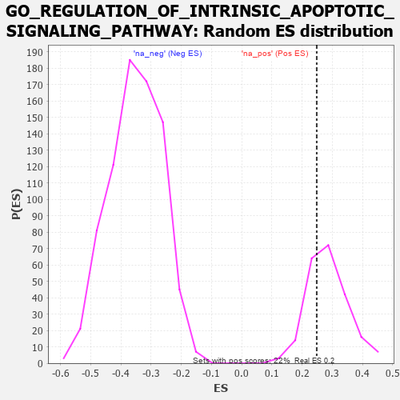

| | | Dataset | 7d |
| Phenotype | NoPhenotypeAvailable |
| Upregulated in class | na_pos |
| GeneSet | GO_REGULATION_OF_INTRINSIC_APOPTOTIC_SIGNALING_PATHWAY |
| Enrichment Score (ES) | 0.24859066 |
| Normalized Enrichment Score (NES) | 0.87281376 |
| Nominal p-value | 0.6972477 |
| FDR q-value | 0.86240846 |
| FWER p-Value | 1.0 |
Table: GSEA Results Summary
Fig 1: Enrichment plot: GO_REGULATION_OF_INTRINSIC_APOPTOTIC_SIGNALING_PATHWAY
Profile of the Running ES Score & Positions of GeneSet Members on the Rank Ordered List
| PROBE | GENE SYMBOL | GENE_TITLE | RANK IN GENE LIST | RANK METRIC SCORE | RUNNING ES | CORE ENRICHMENT | | 1 | DAPK2 | | | 343 | 0.754 | 0.0057 | Yes |
| 2 | BAX | | | 387 | 0.711 | 0.0465 | Yes |
| 3 | RAD9A | | | 418 | 0.681 | 0.0870 | Yes |
| 4 | RRN3 | | | 438 | 0.667 | 0.1279 | Yes |
| 5 | HTRA2 | | | 527 | 0.621 | 0.1571 | Yes |
| 6 | NOC2L | | | 647 | 0.578 | 0.1797 | Yes |
| 7 | AKT1 | | | 1040 | 0.476 | 0.1612 | Yes |
| 8 | TAF9 | | | 1046 | 0.475 | 0.1914 | Yes |
| 9 | SRC | | | 1128 | 0.459 | 0.2110 | Yes |
| 10 | NCK2 | | | 1131 | 0.458 | 0.2405 | Yes |
| 11 | PARL | | | 1290 | 0.432 | 0.2486 | Yes |
| 12 | ERP29 | | | 1589 | 0.376 | 0.2354 | No |
| 13 | HYOU1 | | | 1692 | 0.358 | 0.2459 | No |
| 14 | ATAD5 | | | 2197 | 0.277 | 0.2003 | No |
| 15 | TRAP1 | | | 2219 | 0.274 | 0.2154 | No |
| 16 | MIF | | | 2357 | 0.252 | 0.2146 | No |
| 17 | KDM1A | | | 2447 | 0.237 | 0.2187 | No |
| 18 | BECN1 | | | 2828 | 0.179 | 0.1825 | No |
| 19 | PIAS4 | | | 3034 | 0.145 | 0.1660 | No |
| 20 | HDAC1 | | | 3086 | 0.138 | 0.1686 | No |
| 21 | GPX1 | | | 3109 | 0.135 | 0.1746 | No |
| 22 | DDX3X | | | 3388 | 0.091 | 0.1455 | No |
| 23 | FIS1 | | | 3654 | 0.051 | 0.1154 | No |
| 24 | PARP1 | | | 4014 | -0.010 | 0.0708 | No |
| 25 | SFRP2 | | | 4065 | -0.018 | 0.0656 | No |
| 26 | PDX1 | | | 4179 | -0.038 | 0.0539 | No |
| 27 | OPA1 | | | 4330 | -0.065 | 0.0392 | No |
| 28 | SYVN1 | | | 4454 | -0.085 | 0.0293 | No |
| 29 | LRRK2 | | | 4467 | -0.087 | 0.0334 | No |
| 30 | FBXW7 | | | 4816 | -0.161 | 0.0000 | No |
| 31 | CLU | | | 4889 | -0.174 | 0.0023 | No |
| 32 | MMP9 | | | 5108 | -0.227 | -0.0104 | No |
| 33 | FLCN | | | 5140 | -0.235 | 0.0010 | No |
| 34 | XBP1 | | | 6011 | -0.475 | -0.0778 | No |
| 35 | UBB | | | 6090 | -0.503 | -0.0550 | No |
| 36 | VDAC2 | | | 6242 | -0.553 | -0.0382 | No |
| 37 | DNM1L | | | 6963 | -0.913 | -0.0696 | No |
| 38 | CYLD | | | 7333 | -1.206 | -0.0377 | No |
| 39 | BOK | | | 7715 | -1.817 | 0.0323 | No |
Table: GSEA details [plain text format]

Fig 2: GO_REGULATION_OF_INTRINSIC_APOPTOTIC_SIGNALING_PATHWAY: Random ES distribution
Gene set null distribution of ES for GO_REGULATION_OF_INTRINSIC_APOPTOTIC_SIGNALING_PATHWAY